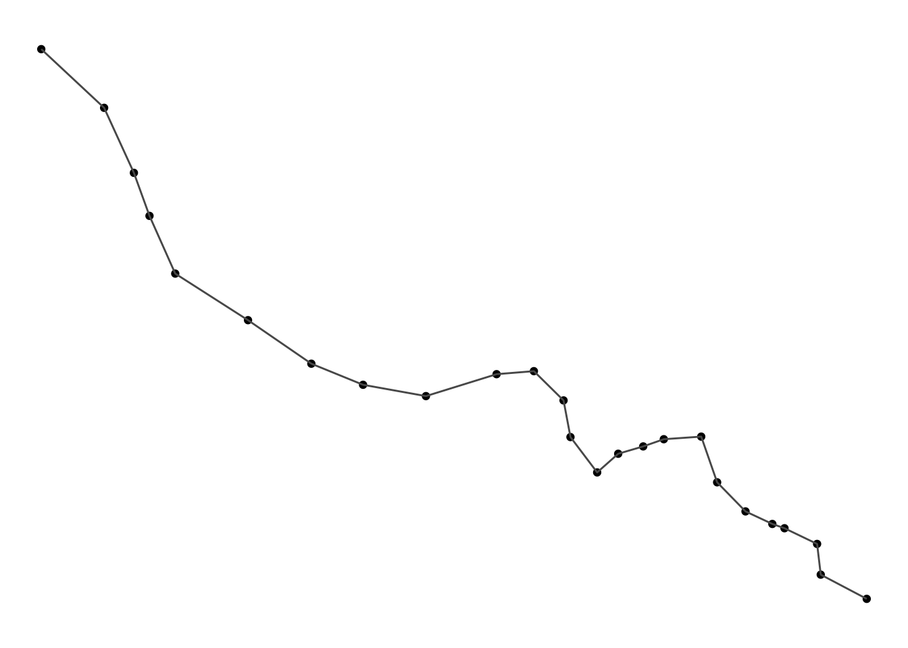
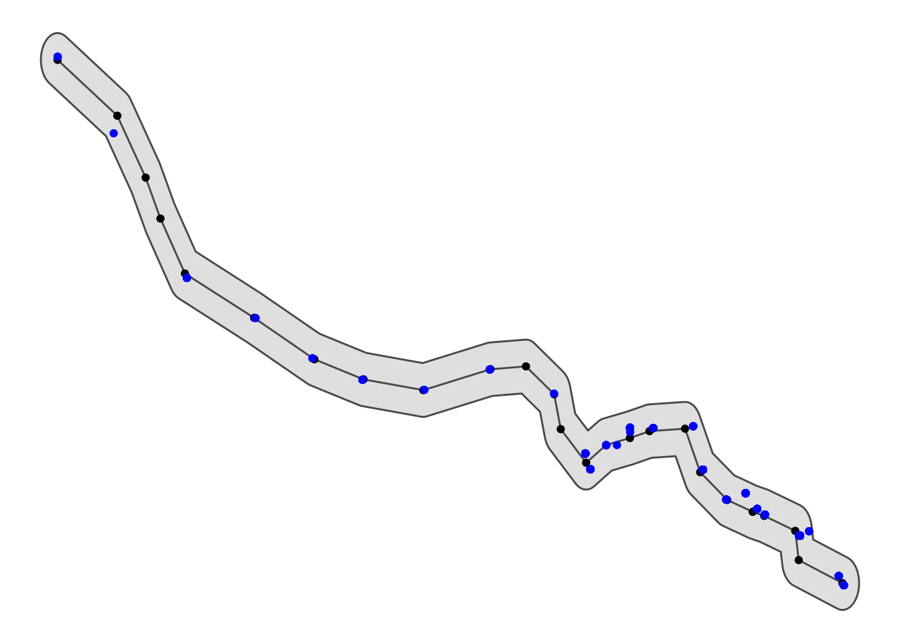
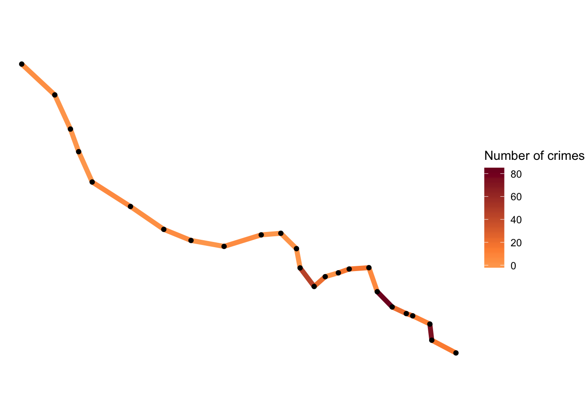
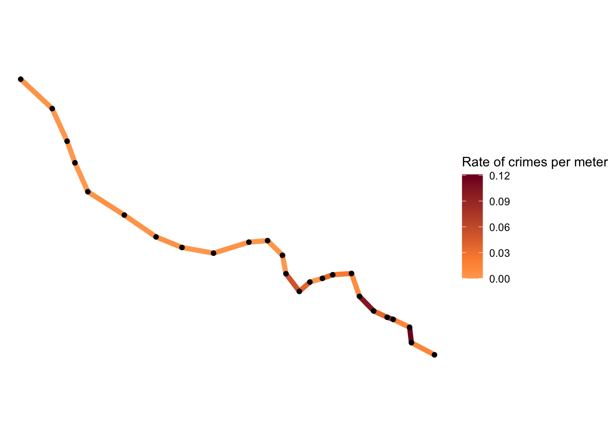
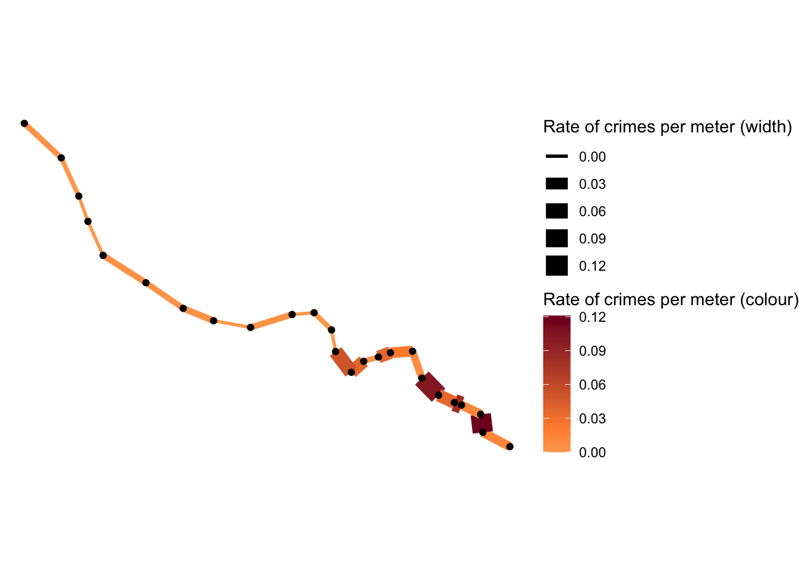

Crime concentrates in place and time, and it is the task of the crime analyst to identify where and when these hotspots emerge. This is often achieved by producing density maps. Kernel density estimation is one methdod for producing such maps, which involves applying a function (known as a “kernel”) to each data point, which averages the location of that point with respect to the location of other data points. The surface that results from this model allows us to produce isarithmic maps, also referred to in common parlor as heatmaps (see our crime mapping textbook on GitHub for more on Kernel Density Mapping and a “how-to-in-R” tutorial).
However, often we might be interested in how crime concentrates along a particular network such as along streets, bus routes, train nextworks, and others. In order to map hot spots along a network, we can use a technique called hot routes. It was used as early as 2003 by Andrew Newton to map crime and disorder on the bus network in Merseyside. A useful how-to guide was later produced by Henry Partridge and Lisa Tompson and can be accessed in the associated JDI brief or journal article.
Hot Routes was devised to be a straightforward spatial technique that analyses crime patterns that are associated with a linear network (e.g. streets and other transportation networks). It allows an analyst to map crime concentrations along different segments of the network and visualise this through colour.
Here I will go through an example of how to apply hot routes in R. We will follow the 4 steps outlined by Henry Partridge and Lisa Tompson in the JDI brief:
Step 1: Prepare the network layer Step 2. Link crime events to street segments Step 3: Calculate a rate Step 4: Visualise the results
I will use the example dataset of the London Underground network, spatial data for which can be downloaded using the Transport for London API, and crime from British Transport Police for February 2020 available via data.police.uk.
Step 1: Prepare the network layer
The first step is to prepare our network layer. There are several substeps to this. First we need to acquire a shapefile for our network. Here we will keep it simple for the sake of the tutorial, and use only one line. Let’s go with the Bakerloo line. We can get this data using the TfL API. We can use R to make the API call for us by taking the query URL, and getting the results using the readLines() function in base R, and putting that within the fromJSON() function from therjson package.
library(rjson)
#get json from TfL API
api_call <- fromJSON(readLines("https://api.tfl.gov.uk/line/bakerloo/route/sequence/outbound"))## Warning in readLines("https://api.tfl.gov.uk/line/bakerloo/route/sequence/
## outbound"): incomplete final line found on 'https://api.tfl.gov.uk/line/
## bakerloo/route/sequence/outbound'When you run the above, you might get a warning messae about incomplete final line, I’m not sure why, but we still get the object api_call in our environment, you can see it’s a large list with 10 elements.
You can have a look at this list, it has many interesting bits, but what I want to do here is extract the stops along the bakerloo line and their respective coordinates. There are probably much more efficient ways to do this, but here is mine (this is a tutorial on hot routes, not on parsing json files haha!)
#parse df of stops and latlongs
datalist = list()
for (i in 1:length(api_call$stations)) {
datalist[[i]] <- data.frame(stn_name = api_call$stations[[i]]$name,
stn_lat = api_call$stations[[i]]$lat,
stn_lon = api_call$stations[[i]]$lon,
line = "bakerloo")
}
bakerloo_stops <- do.call(rbind, datalist)Now you can see we have an object called bakerloo_stops which has 25 observations of 4 variables (station name, latitude, longitude, and line).
In order to carry out our spatial operations, we will be making use of the sf package. So I will load the sf package and also convert this list of stops to an sf object using st_as_sf() and build the line between the stops using group_by() (from dplyr package), st_union() and st_cast() (from sf):
library(dplyr)
library(sf)
bakerloo_stops <- st_as_sf(bakerloo_stops, coords = c("stn_lon", "stn_lat"), crs = 4326)
bakerloo_line <- bakerloo_stops %>%
group_by(line) %>%
st_union() %>%
st_cast("LINESTRING")Now we have a line and the set of stations along it. We can use the ggplot2 package to plot it like so:
library(ggplot2)
ggplot()+
geom_sf(data = bakerloo_stops) +
geom_sf(data = bakerloo_line) +
theme_void() +
theme(panel.grid.major = element_line(colour = "white"))
NOTE: I have added theme_void() AND theme(panel.grid.major = element_line(colour = "white")) because apprently theme_void() + geom_sf() have some issues together.
Right, so that’s looking good. But here we have only one line. What we want is to break our line into sections. How you do this depends really much on what you want to show. In this case, it might be meaningful to consider each segment of the line between stops. In this case, we can use the shapefile of the stops (bakerloo_stops) to break up our line (bakerloo_line). However, as Henry and Lisa note, network layers typically contain streets of unequal length. This means that longer segments might show up as hot simply because they have more space to contain more crimes. Therefore in such cases it is advisable in this analysis to use equal length street segments, where possible.
In this case however, let’s stick to the stops. To split our linestring (bakerloo_line) into many linestrings using the stops (bakerloo_stops) we can use the st_split() function from the lwgeom package and st_collection_extract() function from sf. Furter, as the st_split() function is expecting a blade argument of length 1, we can use the st_combine() (from sf) function to group our tube stations alltogether:
library(lwgeom)
parts <- st_split(bakerloo_line, st_combine(bakerloo_stops$geometry)) %>% st_collection_extract("LINESTRING")
parts## Geometry set for 24 features
## Geometry type: LINESTRING
## Dimension: XY
## Bounding box: xmin: -0.334896 ymin: 51.4945 xmax: -0.099185 ymax: 51.59222
## Geodetic CRS: WGS 84
## First 5 geometries:You can see we now have a new object called parts which is a linestring containing 24 features, the segments between our 25 tube stations, all as unique lines. You can also see that this is a geometry set of 24 features, let’s turn it into a simple features collection, and label each of the segments with a number by taking each element of parts and binding it together as a dataframe.
datalist = list()
for (i in 1:length(parts)) {
datalist[[i]] <- st_as_sf(data.frame(section = i), geometry = st_geometry(parts[i]))
}
bakerloo_sections <- do.call(rbind, datalist)Step 2: Link crime events to street segments
In this step, each crime event needs to be linked to the nearest street segment and the attribute table of the network layer updated with the corresponding count of crime.
To achieve this, first let’s get some crime data. I have downloaded all the BTP crime data from the police.uk website, and saved it in my local data folder. From here I can use read.csv() to import it, and similar to the stations, use st_as_sf() to turn it into a sf object:
crimes <- read.csv("data/2020-02-btp-street.csv")
crimes_sf <- st_as_sf(crimes, coords = c("Longitude", "Latitude"), crs = 4326)Of course this download includes BTP data for the whole country. We don’t want this. Instead we can think about some threshold within which we care about our crimes. What I mean is, we want to first select all the crimes that we want to arrtibute to our specific network. This will vary with what you are plotting. In the case for example of a street network for the London Borough of Camden, you would want to include all crimes that are within the boundary of Camden. In the case of a bus route or a train route however, you might want to set some buffer, within which you are interested in counting crimes, but outside of which you believe they are too far to be attributable to your network object of interest.
How you choose the size of this buffer will depend on things like how accurate you think the geocoding of your data is, or other considerations.
Here I just went with a coarse buffer of 0.005 arc degrees. The dist argument is assumed to be in decimal degrees (arc_degrees). This buffer distance is a units object, it should be convertible to arc_degree if x has geographic coordinates, and to st_crs(x)$units otherwise.
So I build a buffer of 0.005 decimal degrees around the line using st_buffer(), and keep only the crimes that fall within this buffer using st_intersection():
bakerloo_line_buff <- st_buffer(bakerloo_line, 0.005)## Warning in st_buffer.sfc(bakerloo_line, 0.005): st_buffer does not correctly
## buffer longitude/latitude datacrimes_sf <- st_intersection(bakerloo_line_buff, crimes_sf)I can plot it all to see if it looks good:
ggplot()+
geom_sf(data = bakerloo_line_buff) +
geom_sf(data = bakerloo_line) +
geom_sf(data = bakerloo_stops) +
geom_sf(data = crimes_sf, col = "blue") +
theme_void() +
theme(panel.grid.major = element_line(colour = "white"))
Great, now what we want to do is snap each one of these crime points to the nearest line section (remember we have the 24 sections in the parts object).
To do this, we can use the st_nearest_feature() function. This will return, for each point, the ID of the nearest segment.
bline_segments <- st_nearest_feature(crimes_sf, bakerloo_sections)
bline_segments## [1] 21 13 13 20 20 20 20 20 20 13 13 23 23 23 23 23 19 19 19 19 19 15 15 15 15
## [26] 6 6 6 6 6 6 6 6 6 6 6 6 6 6 6 6 6 6 6 6 6 6 6 6 6
## [51] 6 6 6 6 6 6 6 6 6 6 6 6 6 6 6 6 6 6 6 6 6 6 6 6 6
## [76] 6 6 6 6 6 6 6 6 6 6 6 6 6 6 6 6 6 6 6 6 6 6 6 6 1
## [101] 1 1 1 1 1 1 1 1 1 1 1 1 1 7 2 2 2 2 2 2 2 2 2 2 2
## [126] 2 2 2 2 2 10 10 10 10 10 10 10 10 10 10 10 10 10 10 10 10 10 4 4 4
## [151] 4 16 8 8 8 8 8 8 8 9 9 9 9 9 9 9 9 9 9 9 9 9 9 9 9
## [176] 9 9 9 9 9 9 9 9 9 9 9 9 9 9 9 9 9 9 9 9 9 9 9 9 9
## [201] 9 9 9 9 9 9 9 9 9 9 9 9 9 9 9 9 9 9 9 18 18 18 18 18 18
## [226] 18 18 18 18 18 18 18 18 18 18 18 18 18 18 18 18 18 18 18 18 18 18 18 18 18
## [251] 18 18 18 18 18 18 18 18 18 18 18 18 18 18 4 4 4 4 4 4 4 4 4 4 4
## [276] 4 4 4 4 4 4 12 12 12 12 12 12 12 12 12 12 12 12 12 12 12 12 12 12 12
## [301] 12 12 3 3 3 3 3 3 3 3 3 3 9 9 3 9 3 3 3 9 9 9 3 3 3
## [326] 3 9 9 9 9 9 9 9 9 9 9 9 9 9 9 9 9 3 9 3 3 22 22 22 22
## [351] 22 22 22 22 22 22It is simply a list of the ID numbers of matched line segments for each of the 356 crime points in the crimes_sf object. We can use this to create a frequency table and save this in a dataframe to be joined to the linesegment object. We will also need to replace our missing values with 0s, since in this case the segments which do not appear in our frequency table had 0 crimes snapped to them. We use the replace_na() function from the tidyr package.
library(tidyr)
#make list of nearest into df of frequency
sections_freq <- as.data.frame(table(bline_segments))
#make sure id is numeric
sections_freq$bline_segments <- as.numeric(as.character(sections_freq$bline_segments))
#join to sections object and replace NAs with 0s
bakerloo_sections <- left_join(bakerloo_sections, sections_freq, by = c("section" = "bline_segments")) %>%
mutate(Freq = replace_na(Freq, 0)) Now we have an sf object with each section labelled with the number of crimes that were snapped to it as they were the nearest segment. So essentially, the number of crimes on (and around, depending on your buffer decisions) each segment. We could map this count line:
midpoint_crimes <- mean(bakerloo_sections$Freq)
ggplot() +
geom_sf(data = bakerloo_sections, aes(colour = Freq), lwd = 2) +
geom_sf(data = bakerloo_stops) +
theme_void() +
theme(panel.grid.major = element_line(colour = "white")) + #theme void is buggy with geom_sf() so need this too
scale_colour_gradient2(name = "Number of crimes",
midpoint = midpoint_crimes,
low = "#ffffcc", mid = "#fd8d3c", high = "#800026")
But of course we want to account for things like the length of each segment as they are unequal.
Step 3: Calculate a rate
Next, to calculate a rate we need a denominator. In this case, length may be a good one, so the length of each street segment needs to be calculated. We can do this using the st_length() function. Since our data are all in WGS84 projection, this will return the length of each segment in meters.
bakerloo_sections$length <- st_length(bakerloo_sections)Once we have all the lengths, a new column needs to be created in the network layer to record a crime per metre score. This is calculated by dividing the number of crimes linked to a street segment by its length.
bakerloo_sections$crime_per_m <- bakerloo_sections$Freq / bakerloo_sections$lengthWe now have our crimes per meter score! On to mapping!
Step 4: Visualise the results
The final step is to thematically shade each street segment with a colour (and line thickness if desired) that corresponds to the range of the rate of crime per metre.
For this, let’s convert our crimes per meter (crime_per_m) variable to numeric from a “units” object, and then use ggplot once again.
bakerloo_sections$crime_per_m <- as.numeric(bakerloo_sections$crime_per_m)
midpoint_rates <- mean(bakerloo_sections$crime_per_m)
ggplot() +
geom_sf(data = bakerloo_sections, aes(colour = crime_per_m), lwd = 2) +
geom_sf(data = bakerloo_stops) +
theme_void() +
theme(panel.grid.major = element_line(colour = "white")) + #theme void is buggy with geom_sf() so need this too
scale_colour_gradient2(name = "Rate of crimes per meter",
midpoint = midpoint_rates,
low = "#ffffcc", mid = "#fd8d3c", high = "#800026")
And if we wanted to add thickness as well we can by specifying the size argument:
ggplot() +
geom_sf(data = bakerloo_sections, aes(colour = crime_per_m, size = crime_per_m), show.legend = "line") +
geom_sf(data = bakerloo_stops) +
theme_void() +
theme(panel.grid.major = element_line(colour = "white")) + #theme void is buggy with geom_sf() so need this too
scale_colour_gradient2(name = "Rate of crimes per meter (colour)",
midpoint = midpoint_rates,
low = "#ffffcc", mid = "#fd8d3c", high = "#800026") +
scale_size_continuous(name = "Rate of crimes per meter (width)") 
All done! We have now managed to create a hot routes map of crimes on or near the barkerloo line recorded by British Transport Police in February 2020.
Final remarks
This has been a very simple application of the hot routes technique in R, and I hope this tutorial is helpful and can be applied to many other sets of data! If anyone is following along and gets stuck just get in touch with me on twitter ([@r_solymosi](https://twitter.com/r_solymosi)) or by email reka.solymosi@manchester.ac.uk. Also many of the solutions here are possibly hacky, if someone has better ways of doing this please just let me know, I am happy to improve it. As is always the case there are more sophisticated ways to do this, for example using the spatstat package (for a quick intro see section 6.7 in our crime mapping textbook), and probably many more, but this also does the job…!
Further, while hot routes is a really neat way to visualise crime rates along a network for sure, it may be the case that the geographic location of each segment or stop is not so important, and instead it is the ditribution of crime along a route that is the focus. In this case another visualisation technique that may be useful is street profile analysis introduced by Valerie Spicer and colleagues, detailed in this paper. I can always write another tutorial on this one in R, if there’s interest.
Anyway, happy mapping friends!